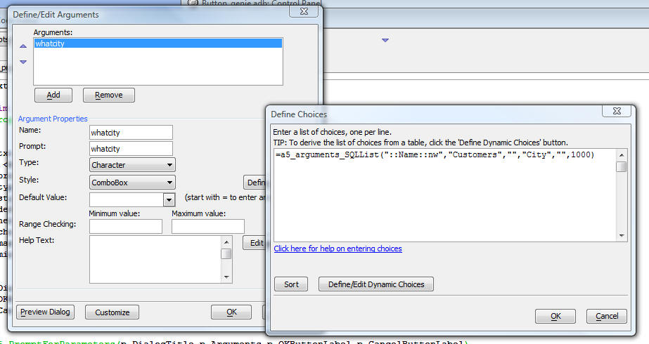

Arguments - Dynamic Choices
Arguments are used extensively throughout Alpha Five. The 'Define/Edit Arguments' dialog, where you define Arguments, and also define how missing argument values get prompted for, now allows you to define dynamic choices (i.e. from a .dbf or SQL table) for Combo boxes, Edit combo boxes and List boxes.

The following video show how the dynamic choice option is used in a report that has a filter expression that uses an argument.